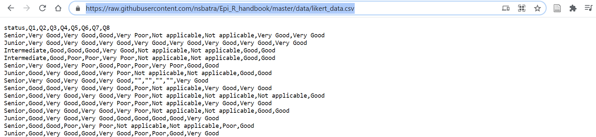

7 Nhập xuất dữ liệu

Trong chương này, chúng tôi mô tả các cách để định vị, nhập và xuất tệp:
Sử dụng package rio để
import()vàexport()linh hoạt nhiều loại tệp
Sử dụng package here để định vị tệp liên quan đến dự án R gốc - để ngăn ngừa sự phức tạp do nhiều đường dẫn tệp chỉ dành riêng cho một máy tính
Các tình huống nhập dữ liệu thường gặp:
- Từ một Trang tính Excel
- Có tiêu đề sắp xếp lộn xộn và cần bỏ qua một số hàng
- Từ trang tính của Google
- Từ dữ liệu được đăng lên các trang web
- Với APIs
- Nhập tệp gần đây nhất
- Từ một Trang tính Excel
Nhập dữ liệu thủ công
Các loại tệp R đặc trưng ví dụ như RDS và RData
Xuất/lưu tệp và biểu đồ
7.1 Tổng quan
Khi bạn nhập một “dataset (bộ dữ liệu)” vào R, bạn thường cần tạo ra một đối tượng data frame mới trong môi trường R và định nghĩa nó là tệp được nhập (ví dụ: Excel, CSV, TSV, RDS), từ trong các thư mục của bạn tại một đường dẫn/địa chỉ tệp nhất định.
Bạn có thể nhập/xuất nhiều loại tệp, bao gồm cả những tệp được tạo bởi các chương trình thống kê khác (SAS, STATA, SPSS). Bạn cũng có thể kết nối với các cơ sở dữ liệu liên quan.
R thậm chí còn có các định dạng dữ liệu riêng:
- Một tệp RDS (.rds) lưu trữ một đối tượng R đơn lẻ, chẳng hạn như một data frame. Chúng hữu ích trong việc lưu trữ dữ liệu đã được làm sạch, vì chúng giữ lại kiểu dữ liệu cho các cột R. Đọc thêm trong mục này.
- Một tệp RData (.Rdata) có thể được sử dụng để lưu trữ nhiều đối tượng hoặc thậm chí là một không gian làm việc trong R hoàn chỉnh. Đọc thêm trong mục này.
7.2 Package rio
Package R chúng tôi gợi ý là: rio. Tên “rio” là chữ viết tắt của “R I/O” (dữ liệu đầu vào (input)/kết quả đầu ra (output)).
Hàm import() và export() có thể xử lý nhiều loại tệp khác nhau (ví dụ: .xlsx, .csv, .rds, .tsv). Khi bạn cung cấp đường dẫn tệp đến một trong các hàm này (bao gồm cả đuôi file mở rộng như “.csv”), rio sẽ đọc phần mở rộng và sử dụng đúng công cụ để nhập hoặc xuất tệp.
Giải pháp thay thế cho việc sử dụng rio là sử dụng các hàm từ nhiều package khác, mỗi package cụ thể cho một loại tệp. Ví dụ như, read.csv() (base R), read.xlsx() (package openxlsx) và write_csv() (package readr), v.v… Những lựa chọn thay thế này có thể khó nhớ, trong khi sử dụng import() và export() từ rio rất dễ dàng.
Các hàm import() và export() của rio sử dụng package và lệnh phù hợp cho một tệp nhất định, dựa trên phần mở rộng của tệp đó. Xem phần cuối của chương này để xem bảng đầy đủ về các package/hàm rio sử dụng trong nền. Hàm này cũng có thể được sử dụng để nhập các tệp STATA, SAS và SPSS trong hàng tá các loại tệp khác.
Nhập/xuất shapefiles đòi hỏi sử dụng các package khác, được mô tả cụ thể trong chương GIS cơ bản.
7.3 Package here
Package here và hàm here() của nó giúp R dễ dàng biết nơi tìm và lưu tệp của bạn - về bản chất, nó xây dựng đường dẫn tệp.
Được sử dụng cùng với dự án R, here cho phép bạn mô tả vị trí các tệp trong dự án R của bạn trong thư mục gốc (root directory) của dự án R (thư mục cấp cao nhất). Điều này hữu ích khi dự án R có thể được chia sẻ hoặc truy cập bởi nhiều người dùng/máy tính. Package này ngăn ngừa sự phức tạp do các đường dẫn tệp là duy nhất trên các máy tính khác nhau (ví dụ: "C:/Users/Laura/Documents...") bằng cách “khởi động (starting)” đường dẫn tệp ở thư mục chung cho tất cả người dùng (dự án R gốc).
Đây là cách here() làm việc trong một dự án R:
- Khi package here được tải lần đầu tiên trong dự án R, nó đặt một tệp nhỏ có tên là “.here” trong thư mục gốc dự án R của bạn như là một “điểm chuẩn” hoặc “mỏ neo”
- Trong script của bạn, để tham chiếu một tệp trong các thư mục con của dự án R, bạn sử dụng hàm
here()để tạo đường dẫn tệp liên quan đến thư mục gốc (anchor) - Để tạo đường dẫn tệp, viết tên các thư mục bên ngoài thư mục gốc, trong dấu ngoặc kép, được phân tách bằng dấu phẩy, cuối cùng kết thúc bằng tên và phần mở rộng của tệp như được trình bày dưới đây
- Các đường dẫn tệp
here()có thể được sử dụng cả để nhập và xuất dữ liệu
Ví dụ, dưới đây, một đường dẫn tệp được tạo bởi hàm here() đang được cung cấp cho hàm import()
Lệnh here("data", "linelists", "ebola_linelist.xlsx") trên thực tế đang cung cấp đường dẫn tệp đầy đủ mà là duy nhất cho máy tính của người dùng:
"C:/Users/Laura/Documents/my_R_project/data/linelists/ebola_linelist.xlsx"Ưu điểm là lệnh here() được R sử dụng có thể chạy thành công trên bất kỳ máy tính nào truy cập vào dự án R.
MẸO: Nếu bạn không chắc gốc “.here” được đặt ở đâu, hãy chạy lệnh here() với dấu ngoặc đơn trống.
Đọc thêm về package here tại đường dẫn này.
7.4 Đường dẫn tệp
Khi nhập hoặc xuất dữ liệu, bạn phải cung cấp một đường dẫn tệp. Bạn có thể thực hiện thao tác này bằng một trong ba cách sau:
- Khuyên dùng: cung cấp một đường dẫn tệp “tương đối” bằng package here
- Cung cấp đường dẫn tệp “đầy đủ” / “tuyệt đối”
- Chọn tệp theo cách thủ công
Đường dẫn tệp “tương đối”
Trong R, đường dẫn tệp “tương đối” bao gồm đường dẫn tệp mà liên quan đến phần gốc của dự án R. Chúng cho phép nhiều đường dẫn tệp đơn giản hơn có thể làm việc trên nhiều máy tính khác nhau (ví dụ: nếu dự án R nằm trên bộ nhớ dùng chung hoặc được gửi qua thư điện tử). Như đã được mô tả ở trên, đường dẫn tệp tương đối được tạo ra dễ dàng bằng cách sử dụng package here.
Dưới đây là một ví dụ về đường dẫn tệp tương đối được tạo bằng package here(). Chúng tôi giả sử công việc nằm trong một dự án R có chứa một thư mục con “data” và bên trong nó là thư mục con “linelists”, trong đó có tệp .xlsx được quan tâm.
Đường dẫn tệp “tuyệt đối”
Đường dẫn tệp tuyệt đối hay “đầy đủ” có thể được cung cấp cho các hàm như import() nhưng chúng “dễ đứt gãy” bởi vì chúng là duy nhất đối với các máy tính của những người dùng khác nhau, và do đó không được khuyến khích sử dụng.
Dưới đây là một ví dụ về đường dẫn tệp tuyệt đối, trong máy tính của Laura có một thư mục “analysis”, tiếp theo là thư mục con “data” và bên trong là thư mục con “linelists”, trong đó có tệp .xlsx được quan tâm.
Một vài điều cần lưu ý về đường dẫn tệp tuyệt đối:
- Tránh sử dụng đường dẫn tệp tuyệt đối vì chúng sẽ bị đứt gãy nếu script được chạy trên một máy tính khác
- Sử dụng dấu gạch chéo tiến (
/), như trong ví dụ trên (lưu ý: đây KHÔNG phải là kiểu mặc định đối với đường dẫn tệp trong Windows)
- Đường dẫn tệp bắt đầu với hai dấu gạch chéo (ví dụ: “//…”) sẽ có khả năng không được R nhận ra và tạo ra lỗi. Hãy cân nhắc chuyển công việc của bạn sang ổ đĩa “có tên” hoặc “có chữ” bắt đầu bằng một chữ cái (ví dụ: “J:” hoặc “C:”). Xem chương về Tương tác với thư mục làm việc để biết thêm chi tiết về vấn đề này.
Một tình huống mà đường dẫn tệp tuyệt đối có thể thích hợp là khi bạn muốn nhập một tệp từ bộ nhớ dùng chung có cùng đường dẫn tệp đầy đủ cho tất cả người dùng.
MẸO: Để nhanh chóng chuyển đổi tất cả \ thành /, hãy bôi đen đoạn code cần chuyển, sử dụng Ctrl + F (trong Windows) và tích vào tùy chọn “In selection”, sau đó sử dụng chức năng thay thế (replace) để chuyển đổi chúng.
Chọn tệp theo cách thủ công
Bạn có thể nhập dữ liệu theo cách thủ công thông qua một trong các phương pháp sau:
- Từ cửa sổ Environment trong RStudio, nhấp vào “Import Dataset” và chọn loại dữ liệu
- Nhấp vào File / Import Dataset / (chọn loại dữ liệu)
- Để lựa chọn thủ công bằng code, hãy sử dụng lệnh
file.choose()trong base R (để trống dấu ngoặc đơn) để kích hoạt sự xuất hiện của một cửa sổ pop-up cho phép người dùng chọn tệp theo cách thủ công từ máy tính của họ. Ví dụ:
# Manual selection of a file. When this command is run, a POP-UP window will appear.
# The file path selected will be supplied to the import() command.
my_data <- import(file.choose())MẸO: Cửa sổ pop-up có thể xuất hiện SAU cửa sổ RStudio của bạn.
7.5 Nhập dữ liệu
Sử dụng lệnh import() để nhập một bộ dữ liệu khá đơn giản. Chỉ cần cung cấp đường dẫn của tệp (bao gồm tên và phần mở rộng của tệp) trong dấu ngoặc kép. Nếu sử dụng hàm here() để xây dựng đường dẫn tệp, hãy làm theo hướng dẫn ở bên trên. Dưới đây là một vài ví dụ:
Nhập một tệp csv nằm trong “thư mục làm việc (working directory)” của bạn hoặc trong thư mục gốc của dự án R:
Nhập sheet đầu tiên của Excel workbook, được đặt trong thư mục con “data” và “linelists” của dự án R (đường dẫn tệp được tạo bằng hàm here()):
Nhập một data frame (một tệp .rds ) sử dụng đường dẫn tệp tuyệt đối:
Trang tính Excel cụ thể
Theo mặc định, nếu bạn cung cấp một Excel workbook (.xlsx) để nhập bằng hàm import(), trang tính đầu tiên của workbook sẽ được nhập. Nếu bạn muốn nhập một trang tính cụ thể, hãy cụ thể tên trang tính vào đối số which =. Ví dụ:
Nếu sử dụng hàm here() để cung cấp một đường dẫn tương đối đến hàm import(), bạn vẫn có thể chỉ ra một trang tính cụ thể bằng cách thêm đối số which = sau dấu đóng ngoặc của hàm here().
# Demonstration: importing a specific Excel sheet when using relative pathways with the 'here' package
linelist_raw <- import(here("data", "linelist.xlsx"), which = "Sheet1")` Để xuất một data frame từ R sang một trang tính Excel và phần còn lại của Excel workbook không thay đổi, bạn sẽ phải nhập, chỉnh sửa và xuất với một package thay thế chuyên biệt cho mục đích này, chẳng hạn như openxlsx. Xem thêm thông tin trong chương về Tương tác với thư mục làm việc hoặc tại trang github này.
Nếu Excel workbook của bạn có phần mở rộng là .xlsb (định dạng nhị phân của Excel workbook) bạn có thể sẽ không nhập được bằng package rio. Hãy cân nhắc lưu lại tệp dưới dạng .xlsx hoặc sử dụng một package như readxlsb, là package được xây dựng cho kiểu tệp này.
Giá trị missing
Bạn có thể muốn xác định (các) giá trị nào trong bộ dữ liệu của mình nên được coi là missing. Như đã giải thích trong chương về Dữ liệu missing, giá trị cho dữ liệu missing trong R là NA, nhưng có thể bộ dữ liệu bạn muốn nhập vào sử dụng giá trị 99, “Missing” hoặc chỉ là khoảng trống ký tự ““.
Sử dụng đối số na = để (nhập) import() và cung cấp (các) giá trị trong dấu ngoặc kép (ngay cả khi chúng là các số). Bạn có thể chỉ định nhiều giá trị bằng cách gộp chúng trong một vectơ, bằng cách sử dụng c() như được trình bày dưới đây.
Tại đây, giá trị “99” trong bộ dữ liệu đã nhập được coi là missing và được chuyển đổi thành NA trong R.
Còn ở đây, bất kỳ giá trị nào là “Missing”, “” (ô trống) hoặc ” ” (khoảng trắng) trong bộ dữ liệu đã nhập đều được chuyển đổi thành NA trong R.
Bỏ qua một số hàng
Đôi khi, bạn có thể không muốn nhập một hàng dữ liệu. Bạn có thể thực hiện thao tác này với đối số skip = nếu sử dụng hàm import() từ package rio trên tệp .xlsx hoặc .csv. Cung cấp số hàng bạn muốn bỏ qua.
Không may là hàm skip = chỉ chấp nhận một giá trị số nguyên, không chấp nhận một khoảng (ví dụ: “2:10” sẽ không hoạt động). Để bỏ qua việc nhập các hàng cụ thể không liên tiếp từ trên cùng, hãy cân nhắc nhập nhiều lần và sử dụng hàm bind_rows() từ dplyr. Hãy xem ví dụ dưới đây về việc chỉ bỏ qua hàng thứ 2.
Quản lý hàng tiêu đề thứ hai
Đôi khi, dữ liệu của bạn có thể có hàng thứ hai, với chức năng như là “từ điển dữ liệu” như hình dưới đây. Trường hợp này có thể xảy ra vấn đề vì nó có thể dẫn đến việc tất cả các cột được nhập vào dưới dạng kiểu “ký tự (character)”.
Dưới đây là một ví dụ về kiểu bộ dữ liệu này (với hàng đầu tiên là từ điển dữ liệu).
Xóa hàng tiêu đề thứ hai
Để bỏ hàng tiêu đề thứ hai, bạn có thể sẽ cần nhập dữ liệu hai lần.
- Nhập dữ liệu vào để lấy tên các cột chính xác
- Nhập lại dữ liệu, bỏ qua hai hàng đầu tiên (hàng tiêu đề và hàng thứ hai)
- Liên kết dataframe đã xóa bỏ 2 hàng đầu tiên với tên cột chính xác ở bước 1
Đối số chính xác được sử dụng để liên kết các tên cột tùy thuộc vào loại tệp dữ liệu (.csv, .tsv, .xlsx, v.v.). Điều này là do rio sử dụng các hàm khác nhau cho các loại tệp khác nhau (xem bảng ở trên).
Đối với tệp Excel: (col_names =)
# import first time; store the column names
linelist_raw_names <- import("linelist_raw.xlsx") %>% names() # save true column names
# import second time; skip row 2, and assign column names to argument col_names =
linelist_raw <- import("linelist_raw.xlsx",
skip = 2,
col_names = linelist_raw_names
) Đối với tệp CSV: (col.names =)
# import first time; sotre column names
linelist_raw_names <- import("linelist_raw.csv") %>% names() # save true column names
# note argument for csv files is 'col.names = '
linelist_raw <- import("linelist_raw.csv",
skip = 2,
col.names = linelist_raw_names
) Tùy chọn sao lưu - thay đổi tên cột dưới dạng một lệnh riêng biệt
# assign/overwrite headers using the base 'colnames()' function
colnames(linelist_raw) <- linelist_raw_namesTạo từ điển dữ liệu
Thông tin thêm! Nếu bạn có hàng thứ hai là từ điển dữ liệu, bạn có thể dễ dàng tạo từ điển dữ liệu thích hợp từ nó. Mẹo này được tham khảo từ bài đăng này.
Kết hợp hai hàng tiêu đề
Trong một số trường hợp khi bộ dữ liệu thô của bạn có hai hàng tiêu đề (hoặc cụ thể hơn, hàng dữ liệu thứ 2 là tiêu đề phụ), bạn có thể sẽ muốn “kết hợp” chúng hoặc thêm các giá trị trong hàng tiêu đề thứ hai vào hàng tiêu đề đầu tiên.
Lệnh dưới đây sẽ xác định tên cột của data frame là sự kết hợp (dán với nhau) của các tiêu đề (đúng) đầu tiên với giá trị ngay bên dưới (trong hàng đầu tiên).
Trang tính Google
Bạn có thể nhập dữ liệu từ một trang tính Google trực tuyến với package googlesheet4 và bằng cách xác thực quyền truy cập của bạn vào trang tính.
Dưới đây là một trang tính Google minh họa được nhập và lưu. Lệnh này có thể yêu cầu xác thực tài khoản Google của bạn. Làm theo lời nhắc và cửa sổ bật lên trong trình duyệt Internet của bạn để cấp cho các package Tidyverse API quyền chỉnh sửa, tạo và xóa trang tính của bạn trong Google Drive.
Trang tính dưới đây “có thể được xem bởi bất kỳ ai có liên kết” và bạn có thể thử nhập trang tính đó.
Gsheets_demo <- read_sheet("https://docs.google.com/spreadsheets/d/1scgtzkVLLHAe5a6_eFQEwkZcc14yFUx1KgOMZ4AKUfY/edit#gid=0")Trang tính cũng có thể được nhập chỉ bằng ID của sheet, một phần ngắn hơn của URL:
Một package khác, googledrive cung cấp các hàm hữu ích để viết, chỉnh sửa và xóa các trang tính Google. Ví dụ: các hàm được sử dụng gs4_create() và sheet_write() đều được tìm thấy trong package này.
Dưới đây là một số hướng dẫn trực tuyến hữu ích khác:
hướng dẫn nhập Google sheet cơ bản
hướng dẫn chi tiết hơn
tương tác giữa googlesheets4 và tidyverse
7.6 Nhập, xuất, tách, kết hợp - nhiều tệp
Xem chương về Lặp, vòng lặp, và danh sách để biết ví dụ về cách nhập và kết hợp nhiều tệp hoặc nhiều Excel workbook. Chương này cũng có các ví dụ về cách chia một data frame thành các phần và xuất từng phần riêng biệt hoặc dưới dạng các trang tính được đặt tên trong một Excel workbook.
7.7 Nhập từ Github
Nhập dữ liệu trực tiếp từ Github vào R có thể rất dễ dàng hoặc có thể yêu cầu một vài bước - tùy thuộc vào loại tệp. Dưới đây là một số cách tiếp cận:
Tệp CSV
Có thể dễ dàng nhập tệp .csv trực tiếp từ Github vào R bằng lệnh R.
- Đi tới repo Github, tìm tệp quan tâm và nhấp vào tệp đó
- Nhấp vào nút “Raw” (sau đó bạn sẽ thấy dữ liệu csv “thô”, như được hiển thị bên dưới)
- Sao chép URL (địa chỉ web)
- Đặt URL trong dấu ngoặc kép trong lệnh R
import()

Tệp XLSX
Bạn có thể không xem được dữ liệu “Thô” cho một số tệp (ví dụ: .xlsx, .rds, .nwk, .shp)
- Đi tới repo Github, tìm tệp quan tâm và nhấp vào tệp đó
- Nhấp vào nút “Download”, như được hiển thị bên dưới
- Lưu tệp trên máy tính của bạn và nhập tệp đó vào R

Shapefiles
Các Shapefiles có nhiều tệp thành phần phụ, mỗi tệp có một phần mở rộng khác nhau. Một tệp sẽ có phần mở rộng “.shp”, nhưng những tệp khác có thể là “.dbf”, “.prj”, v.v. Để tải xuống shapefiles từ Github, bạn sẽ cần tải xuống từng tệp thành phần phụ riêng lẻ và lưu chúng trong cùng một thư mục trên máy tính của bạn. Trong Github, nhấp vào từng tệp riêng lẻ và tải chúng xuống bằng cách nhấp vào nút “Download”.
Một khi được lưu vào máy tính, bạn có thể nhập định dạng tệp như được trình bày trong chương GIS cơ bản bằng cách sử dụng hàm st_read() từ package sf. Bạn chỉ cần cung cấp đường dẫn tệp và tên của tệp “.shp” - miễn là các tệp liên quan khác nằm trong cùng một thư mục trên máy tính của bạn.
Dưới đây, bạn có thể thấy shapefiles tên “sl_adm3” bao gồm nhiều tệp như thế nào - mỗi tệp phải được tải xuống từ Github.

7.8 Nhập dữ liệu thủ công
Nhập theo hàng
Sử dụng hàm tribble của package tibble từ tidyverse (tài liệu tham khảo trực tuyến).
Lưu ý cách tiêu đề cột bắt đầu bằng dấu ngã (~). Cũng lưu ý rằng mỗi cột chỉ được chứa một nhóm dữ liệu (ký tự, số, v.v.). Bạn có thể sử dụng các tab, khoảng cách và hàng mới để làm cho việc nhập dữ liệu trực quan và dễ đọc hơn. Khoảng trắng không quan trọng giữa các giá trị, nhưng mỗi hàng được biểu thị bằng một dòng code mới. Ví dụ:
# create the dataset manually by row
manual_entry_rows <- tibble::tribble(
~colA, ~colB,
"a", 1,
"b", 2,
"c", 3
)Và giờ chúng ta hiển thị bộ dữ liệu mới:
Nhập theo cột
Vì data frame bao gồm các vectơ (cột dọc), cách tiếp cận cơ bản để tạo data frame thủ công trong R yêu cầu bạn phải tạo từng cột và sau đó liên kết chúng lại với nhau. Điều này có thể phản trực quan trong dịch tễ học, vì chúng ta thường nghĩ về dữ liệu của mình theo hàng (như trên).
# define each vector (vertical column) separately, each with its own name
PatientID <- c(235, 452, 778, 111)
Treatment <- c("Yes", "No", "Yes", "Yes")
Death <- c(1, 0, 1, 0)CHÚ Ý: Tất cả các vectơ phải có cùng độ dài (cùng số giá trị).
Các vectơ sau đó có thể được liên kết với nhau bằng cách sử dụng lệnh data.frame():
# combine the columns into a data frame, by referencing the vector names
manual_entry_cols <- data.frame(PatientID, Treatment, Death)Và giờ chúng ta hiển thị bộ dữ liệu mới:
Dán từ clipboard
Nếu bạn sao chép dữ liệu từ nơi khác và có nó trong clipboard (bộ nhớ tạm), bạn có thể thử một trong hai cách dưới đây:
Từ package clipr, bạn có thể sử dụng hàm read_clip_tbl() để nhập dưới dạng data frame hoặc chỉ cần hàm read_clip() để nhập dưới dạng một vectơ ký tự. Trong cả hai trường hợp, hãy để trống dấu ngoặc đơn.
linelist <- clipr::read_clip_tbl() # imports current clipboard as data frame
linelist <- clipr::read_clip() # imports as character vectorBạn cũng có thể dễ dàng xuất sang clipboard của hệ thống bằng clipr. Xem mục bên dưới về Xuất dữ liệu.
Ngoài ra, bạn có thể sử dụng lệnh read.table() từ base R với file = "clipboard") để nhập dưới dạng data frame:
7.9 Nhập tệp gần đây nhất
Thường thì bạn có thể nhận được các bản cập nhật hàng ngày cho bộ dữ liệu của mình. Trong trường hợp này, bạn sẽ muốn viết code mà nhập tệp gần đây nhất. Dưới đây, chúng tôi trình bày hai cách để tiếp cận điều này:
- Chọn tệp dựa trên ngày trong tên tệp
- Chọn tệp dựa trên metadata (siêu dữ liệu - là dạng dữ liệu mô tả thông tin chi tiết về dữ liệu) của tệp (lần sửa đổi cuối cùng)
Ngày trong tên tệp
Cách tiếp cận này dựa trên ba cơ sở:
- Bạn tin tưởng ngày tháng trong tên tệp
- Ngày tháng ở dạng số và thường xuất hiện ở cùng một định dạng (ví dụ: năm rồi tháng rồi ngày)
- Không có số nào khác trong tên tệp
Chúng tôi sẽ giải thích từng bước và sau đó cho bạn thấy cách chúng được kết hợp ở phần cuối.
Đầu tiên, sử dụng dir() từ base R để chỉ trích xuất tên tệp cho mỗi tệp trong thư mục quan tâm. Xem chương về Tương tác với thư mục làm việc để biết thêm chi tiết về dir(). Trong ví dụ này, thư mục quan tâm là thư mục “linelists” trong thư mục “example” chứa trong thư mục “data” của dự án R.
linelist_filenames <- dir(here("data", "example", "linelists")) # get file names from folder
linelist_filenames # print## [1] "20201007linelist.csv" "case_linelist_2020-10-02.csv"
## [3] "case_linelist_2020-10-03.csv" "case_linelist_2020-10-04.csv"
## [5] "case_linelist_2020-10-05.csv" "case_linelist_2020-10-08.xlsx"
## [7] "case_linelist20201006.csv"Một khi bạn có vectơ chứa các tên này, bạn có thể trích xuất ngày với chúng bằng cách áp dụng hàm str_extract() từ stringr với việc sử dụng biểu thức chính quy sau đây. Nó giúp trích xuất bất kỳ số nào trong tên tệp (bao gồm bất kỳ ký tự nào khác ở giữa như dấu gạch ngang hoặc dấu gạch chéo). Bạn có thể đọc thêm về stringr trong chương Ký tự và chuỗi.
linelist_dates_raw <- stringr::str_extract(linelist_filenames, "[0-9].*[0-9]") # extract numbers and any characters in between
linelist_dates_raw # print## [1] "20201007" "2020-10-02" "2020-10-03" "2020-10-04" "2020-10-05" "2020-10-08"
## [7] "20201006"Giả sử ngày thường được viết theo cùng một định dạng ngày (ví dụ: Năm rồi Tháng rồi Ngày) và năm có 4 chữ số, bạn có thể sử dụng các hàm chuyển đổi linh hoạt của lubridate (ymd(), dmy(), or mdy()) để chuyển đổi chúng thành ngày. Đối với các hàm này, dấu gạch ngang, dấu cách hoặc dấu gạch chéo không quan trọng, quan trọng chỉ là thứ tự của các số. Đọc thêm trong chương Làm việc với ngày tháng.
## [1] "2020-10-07" "2020-10-02" "2020-10-03" "2020-10-04" "2020-10-05" "2020-10-08"
## [7] "2020-10-06"Sau đó, hàm base R which.max() có thể được sử dụng để trả về vị trí chỉ mục (ví dụ: 1, 2, 3,…) của giá trị ngày lớn nhất. Tệp mới nhất được xác định chính xác là tệp thứ 6 - “case_linelist_2020-10-08.xlsx”.
## [1] 6Nếu chúng ta tổng hợp tất cả các lệnh này, code hoàn chỉnh có thể trông giống như bên dưới. Lưu ý rằng dấu . ở dòng cuối cùng thay thế cho đối tượng được truyền vào hàm trước đó. Tại thời điểm đó, giá trị chỉ đơn giản là số 6. Giá trị này được đặt trong dấu ngoặc kép để trích xuất phần tử thứ 6 của vectơ tên tệp được tạo bởi dir().
# load packages
pacman::p_load(
tidyverse, # data management
stringr, # work with strings/characters
lubridate, # work with dates
rio, # import / export
here, # relative file paths
fs) # directory interactions
# extract the file name of latest file
latest_file <- dir(here("data", "example", "linelists")) %>% # file names from "linelists" sub-folder
str_extract("[0-9].*[0-9]") %>% # pull out dates (numbers)
ymd() %>% # convert numbers to dates (assuming year-month-day format)
which.max() %>% # get index of max date (latest file)
dir(here("data", "example", "linelists"))[[.]] # return the filename of latest linelist
latest_file # print name of latest file## [1] "case_linelist_2020-10-08.xlsx"Bây giờ bạn có thể sử dụng tên này để hoàn thiện đường dẫn tệp tương đối, với hàm here():
Và bây giờ bạn có thể nhập tệp mới nhất:
Sử dụng thông tin tệp
Nếu tệp của bạn không có ngày trong tên của chúng (hoặc bạn không tin tưởng vào những ngày đó), bạn có thể thử trích xuất ngày sửa đổi cuối cùng từ siêu dữ liệu tệp. Sử dụng các hàm từ package fs để kiểm tra thông tin siêu dữ liệu cho từng tệp, bao gồm thời gian sửa đổi cuối cùng và đường dẫn tệp.
Dưới đây, chúng tôi cung cấp thư mục quan tâm tới hàm dir_info() của package fs. Trong trường hợp này, thư mục quan tâm nằm trong dự án R trong thư mục “data”, thư mục con “example” và thư mục con thư mục này “linelists”. Kết quả là một data frame với một dòng cho mỗi tệp và các cột cho modification_time, path, v.v. Bạn có thể xem ví dụ trực quan về điều này trong chương về Tương tác với thư mục làm việc.
Chúng ta có thể sắp xếp data frame này của các tệp theo cột với modification_time, và sau đó chỉ giữ lại hàng trên cùng/mới nhất (tệp) với head()của base R. Sau đó, chúng ta có thể trích xuất đường dẫn tệp của tệp mới nhất này chỉ với hàm pull() của dplyr trên path cột. Cuối cùng, chúng ta có thể chuyển đường dẫn tệp này đến import(). Tệp đã nhập được lưu dưới dạng latest_file.
7.10 API
Một “Giao diện lập trình tự động (Automated Programming Interface)” (API) có thể được sử dụng để yêu cầu trực tiếp dữ liệu từ một trang web. API là một tập hợp các quy tắc cho phép một ứng dụng phần mềm tương tác với một ứng dụng phần mềm khác. Khách hàng (bạn) gửi một “yêu cầu (request)” và nhận được một “phản hồi (response)” có chứa nội dung. Các package R httr và jsonlite có thể hỗ trợ quá trình này.
Mỗi trang web hỗ trợ API sẽ có tài liệu và chi tiết cụ thể riêng để làm quen. Một số trang web công khai API và cho phép có thể được truy cập bởi bất kỳ ai. Những nền tảng khác, chẳng hạn như nền tảng có ID người dùng và thông tin đăng nhập, yêu cầu xác thực để truy cập dữ liệu của họ.
Không cần phải nói, để nhập dữ liệu qua API thì cần phải có kết nối internet. Chúng tôi sẽ đưa ra các ví dụ ngắn gọn về việc sử dụng API để nhập dữ liệu và liên kết bạn với các tài nguyên khác.
Lưu ý: Hãy nhớ lại rằng dữ liệu có thể được đăng trên một trang web không có API, điều này có thể dễ dàng truy xuất hơn. Ví dụ: một tệp CSV đã đăng có thể được truy cập chỉ bằng cách cung cấp URL của trang web để import() như được mô tả trong mục nhập từ Github.
HTTP request
Trao đổi API thường được thực hiện thông qua một HTTP request. HTTP là Giao thức truyền siêu văn bản (Hypertext Transfer Protocol) và là định dạng cơ bản của giao thức yêu cầu (request)/phản hồi (response) giữa máy khách và máy chủ. Đầu vào và đầu ra chính xác có thể khác nhau tùy thuộc vào loại API nhưng quy trình là giống nhau - “Request” (thường là HTTP request) từ người dùng, thường chứa một truy vấn, theo sau là “Response”, chứa thông tin trạng thái về request và có thể là nội dung được yêu cầu.
Dưới đây là một số thành phần của một HTTP request:
- URL của điểm cuối API
- “Method (Phương thức)” (hoặc “Verb (Động từ)”)
- Các tiêu đề
- Phần thân
HTTP request “method” là hành động bạn muốn thực hiện. Hai phương thức HTTP phổ biến nhất là GET và POST nhưng những phương thức khác có thể bao gồm PUT, DELETE, PATCH, v.v. Khi nhập dữ liệu vào R, rất có thể bạn sẽ sử dụng GET.
Sau request của bạn, máy tính của bạn sẽ nhận được “phản hồi” ở định dạng tương tự như những gì bạn đã gửi, bao gồm URL, trạng thái HTTP (Trạng thái 200 là thứ bạn muốn!), loại tệp, kích thước và nội dung mong muốn. Sau đó, bạn sẽ cần phân tích cú pháp phản hồi này và biến nó thành một data frame khả thi trong môi trường R của bạn.
Package
Package httr hoạt động tốt để xử lý các yêu cầu HTTP trong R. Nó đòi hỏi ít kiến thức về API Web và có thể được sử dụng bởi những người ít quen thuộc với thuật ngữ phát triển phần mềm. Ngoài ra, nếu phản hồi HTTP là .json, bạn có thể sử dụng jsonlite để phân tích cú pháp phản hồi.
Dữ liệu công khai
Dưới đây là một ví dụ về một HTTP request, được mượn từ một hướng dẫn từ Phòng thí nghiệm Dữ liệu Trafford. Trang web này chứa một số tài nguyên khác để tìm hiểu và các bài tập về API.
Tình huống: Chúng ta muốn nhập một danh sách các cửa hàng thức ăn nhanh ở thành phố Trafford, Vương quốc Anh. Dữ liệu có thể được truy cập từ API của Cơ quan Tiêu chuẩn Thực phẩm, cơ quan cung cấp dữ liệu xếp hạng vệ sinh thực phẩm cho Vương quốc Anh.
Dưới đây là các thông số cho yêu cầu của chúng tôi:
- Phương thức HTTP: GET
- URL của điểm cuối API: http://api.ratings.food.gov.uk/Establishments
- Các thông số đã chọn: tên, địa chỉ, kinh độ, vĩ độ, businessTypeId, ratingKey, localAuthorityId
- Các tiêu đề: “x-api-version”, 2
- (Các) Định dạng dữ liệu: JSON, XML
- Tài liệu: http://api.ratings.food.gov.uk/help
R code sẽ như sau:
# prepare the request
path <- "http://api.ratings.food.gov.uk/Establishments"
request <- GET(url = path,
query = list(
localAuthorityId = 188,
BusinessTypeId = 7844,
pageNumber = 1,
pageSize = 5000),
add_headers("x-api-version" = "2"))
# check for any server error ("200" is good!)
request$status_code
# submit the request, parse the response, and convert to a data frame
response <- content(request, as = "text", encoding = "UTF-8") %>%
fromJSON(flatten = TRUE) %>%
pluck("establishments") %>%
as_tibble()Bây giờ bạn có thể làm sạch và sử dụng data frame có tên response, với mỗi hàng là một cơ sở thức ăn nhanh.
Yêu cầu xác thực
Một số API yêu cầu xác thực - để bạn chứng minh mình là ai và có thể truy cập vào dữ liệu bị hạn chế. Để nhập những dữ liệu này, trước tiên bạn có thể cần sử dụng phương thức POST để cung cấp tên người dùng, mật khẩu hoặc code. Điều này sẽ trả về một mã thông báo truy cập, có thể được sử dụng cho các yêu cầu phương thức GET tiếp theo để truy xuất dữ liệu mong muốn.
Dưới đây là một ví dụ về truy vấn dữ liệu từ Go.Data, một công cụ điều tra ổ dịch. Go.Data sử dụng một API cho tất cả các tương tác giữa giao diện người dùng web và các ứng dụng điện thoại thông minh được sử dụng để thu thập dữ liệu. Go.Data được sử dụng trên khắp thế giới. Bởi vì dữ liệu các vụ dịch là nhạy cảm và bạn nên là người duy nhất có thể truy cập vào dữ liệu vụ dịch của mình, nên việc xác thực là bắt buộc.
Dưới đây là một số code R mẫu sử dụng httr và jsonlite để kết nối với API Go.Data để nhập dữ liệu liên hệ truy vết từ vụ dịch của bạn.
# set credentials for authorization
url <- "https://godatasampleURL.int/" # valid Go.Data instance url
username <- "username" # valid Go.Data username
password <- "password" # valid Go,Data password
outbreak_id <- "xxxxxx-xxxx-xxxx-xxxx-xxxxxxx" # valid Go.Data outbreak ID
# get access token
url_request <- paste0(url,"api/oauth/token?access_token=123") # define base URL request
# prepare request
response <- POST(
url = url_request,
body = list(
username = username, # use saved username/password from above to authorize
password = password),
encode = "json")
# execute request and parse response
content <-
content(response, as = "text") %>%
fromJSON(flatten = TRUE) %>% # flatten nested JSON
glimpse()
# Save access token from response
access_token <- content$access_token # save access token to allow subsequent API calls below
# import outbreak contacts
# Use the access token
response_contacts <- GET(
paste0(url,"api/outbreaks/",outbreak_id,"/contacts"), # GET request
add_headers(
Authorization = paste("Bearer", access_token, sep = " ")))
json_contacts <- content(response_contacts, as = "text") # convert to text JSON
contacts <- as_tibble(fromJSON(json_contacts, flatten = TRUE)) # flatten JSON to tibbleCẨN TRỌNG: Nếu bạn đang nhập một lượng lớn dữ liệu từ một API yêu cầu xác thực, nó có thể hết thời gian chờ. Để tránh điều này, hãy truy xuất lại access_token trước mỗi yêu cầu API GET và thử sử dụng các bộ lọc hoặc giới hạn trong truy vấn.
MẸO: Lệnh fromJSON() từ package jsonlite không hoàn toàn không - lồng ghép vào lần đầu tiên nó được chạy, vì vậy bạn vẫn có thể có danh sách các hàng trong phần kết quả của mình. Bạn sẽ cần phải bỏ lồng ghép thêm cho một số biến nhất định; tùy thuộc vào cách .json của bạn được lồng ghép vào nhau. Để xem thêm thông tin về điều này, hãy xem tài liệu về package jsonlite, chẳng hạn như flatten() function.
Để biết thêm chi tiết, hãy xem tài liệu trên LoopBack Explorer, chương Truy vết tiếp xúc hoặc các mẹo API trên Go.Data Github repository
Bạn có thể đọc thêm về httr trong gói lệnh here
Phần này cũng đã được trình bày trong hướng dẫn này và hướng dẫn này.
7.11 Xuất dữ liệu
Với package rio
Với rio, bạn có thể sử dụng lệnh export() theo cách tương tự với import(). Đầu tiên, cung cấp tên của đối tượng R bạn muốn lưu (ví dụ: linelist), sau đó trong dấu ngoặc kép đặt đường dẫn tệp nơi bạn muốn lưu tệp, bao gồm tên tệp mong muốn và phần mở rộng tệp. Ví dụ:
Thao tác này lưu data frame linelist dưới dạng một Excel workbook vào thư mục làm việc/thư mục gốc của dự án R:
Bạn có thể lưu cùng một data frame dưới dạng tệp csv bằng cách thay đổi phần mở rộng. Ví dụ, chúng tôi cũng lưu nó vào một đường dẫn tệp được tạo bằng here():
7.12 Tệp RDS
Giống như .csv, .xlsx, v.v., bạn cũng có thể xuất/lưu các R data frame dưới dạng tệp .rds. Đây là định dạng tệp dành riêng cho R và rất hữu ích nếu bạn biết mình sẽ làm việc lại với dữ liệu đã xuất trong R.
Các nhóm của cột được lưu trữ, vì vậy bạn không cần phải làm sạch lại khi chúng được nhập (với Excel hoặc thậm chí là tệp CSV, điều này có thể khiến bạn đau đầu!). Nó cũng là một tệp nhỏ hơn, hữu ích cho việc xuất và nhập nếu bộ dữ liệu của bạn lớn.
Ví dụ: nếu bạn làm việc trong nhóm Dịch tễ học và cần gửi tệp cho nhóm GIS để lập bản đồ và họ cũng sử dụng R, chỉ cần gửi tệp .rds cho họ! Sau đó, tất cả các nhóm cột được giữ lại và có ít việc phải xử lý hơn.
7.13 Tệp và danh sách Rdata
Tệp .Rdata có thể lưu trữ nhiều đối tượng R - ví dụ: nhiều data frame, kết quả mô hình, danh sách, v.v. Điều này có thể rất hữu ích để hợp nhất hoặc chia sẻ nhiều dữ liệu của bạn cho một dự án nhất định.
Trong ví dụ dưới đây, nhiều đối tượng R được lưu trữ trong tệp “my_objects.Rdata” đã xuất:
Lưu ý: nếu bạn đang thử nhập một danh sách, hãy sử dụng import_list() từ rio để nhập nó với cấu trúc và nội dung gốc hoàn chỉnh.
7.14 Lưu biểu đồ
Hướng dẫn về cách lưu các biểu đồ, chẳng hạn như các biểu đồ được tạo bởi ggplot(), được thảo luận sâu trong chương ggplot cơ bản.
Tóm lại, chạy lệnh ggsave("my_plot_filepath_and_name.png") sau khi in biểu đồ của bạn. Bạn có thể cung cấp một đối tượng biểu đồ đã lưu cho đối số plot = hoặc chỉ cần xác định đường dẫn tệp đích (với phần mở rộng tệp) để lưu biểu đồ được hiển thị gần đây nhất. Bạn cũng có thể kiểm soát width =, height =, units = và dpi =.
Cách để lưu đồ thị mạng lưới (network graph), chẳng hạn như cây lây nhiễm, được đề cập trong chương Chuỗi lây nhiễm.
7.15 Tài nguyên học liệu
R Data Import/Export Manual
R 4 Data Science chapter on data import
ggsave() documentation
Dưới đây là một bảng, lấy từ rio vignette trực tuyến. Đối với mỗi loại dữ liệu, nó hiển thị: phần mở rộng tệp dự kiến, package rio sử dụng để nhập hoặc xuất dữ liệu và trả lời chức năng này có được bao gồm trong phiên bản rio được cài đặt mặc định hay không.
| Định dạng | Phần mở rộng điển hình | Package nhập | Package xuất | Được cài đặt theo mặc định |
|---|---|---|---|---|
| Dữ liệu được phân tách bằng-dấu phẩy | .csv | data.table fread() |
data.table | Có |
| Dữ liệu được phân tách bằng-dấu gạch | .psv | data.table fread() |
data.table | Có |
| Dữ liệu được phân tách bằng-tab | .tsv | data.table fread() |
data.table | Có |
| SAS | .sas7bdat | haven | haven | Có |
| SPSS | .sav | haven | haven | Có |
| Stata | .dta | haven | haven | Có |
| SAS | XPORT | .xpt | haven | haven |
| SPSS Portable | .por | haven | Có | |
| Excel | .xls | readxl | Có | |
| Excel | .xlsx | readxl | openxlsx | Có |
| Cú pháp R | .R | base | base | Có |
| Đối tượng R được lưu | .RData, .rda | base | base | Có |
| Đối tượng R được nối tiếp | .rds | base | base | Có |
| Epiinfo | .rec | foreign | Có | |
| Minitab | .mtp | foreign | Có | |
| Systat | .syd | foreign | Có | |
| “XBASE” | database files | .dbf | foreign | foreign |
| Định dạng tệp Weka Attribute-Relation | .arff | foreign | foreign | Có |
| Định dạng trao đổi dữ liệu | .dif | utils | Có | |
| Dữ liệu Fortran | no recognized extension | utils | Có | |
| Định dạng dữ liệu Fixed-width | .fwf | utils | utils | Có |
| Dữ liệu gzip được phân tách bằng-dấu phẩy | .csv.gz | utils | utils | Có |
| CSVY (Tiêu đề siêu dữ liệu CSV + YAML) | .csvy | csvy | csvy | Không |
| EViews | .wf1 | hexView | Không | |
| Định dạng trao đổi Feather giữa R/Python | .feather | feather | feather | Không |
| Fast Storage | .fst | fst | fst | Không |
| JSON | .json | jsonlite | jsonlite | Không |
| Matlab | .mat | rmatio | rmatio | Không |
| OpenDocument Spreadsheet | .ods | readODS | readODS | Không |
| Bảng HTML | .html | xml2 | xml2 | Không |
| Tài liệu XML cạn | .xml | xml2 | xml2 | Không |
| YAML | .yml | yaml | yaml | Không |
| clipboard mặc định là tsv | | clipr | clipr | Không | | ||||